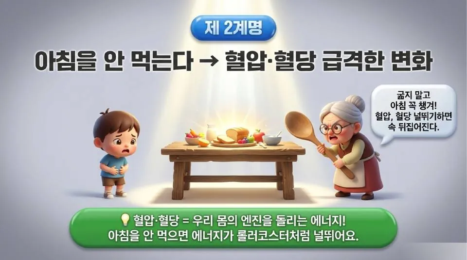
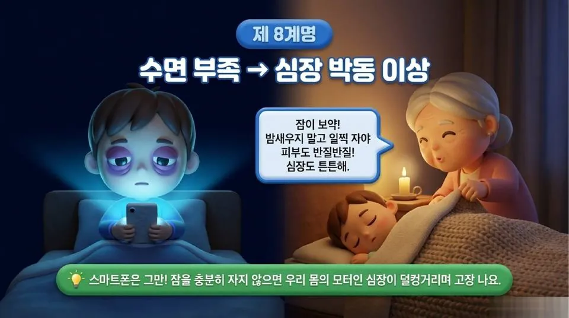
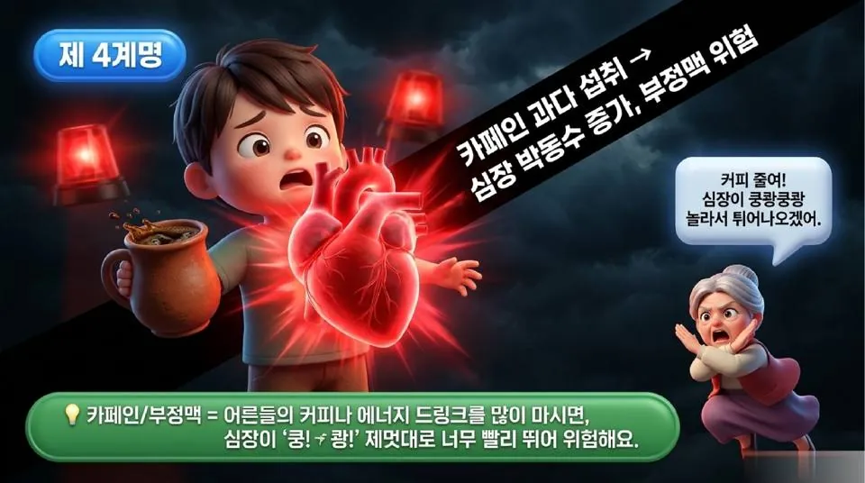
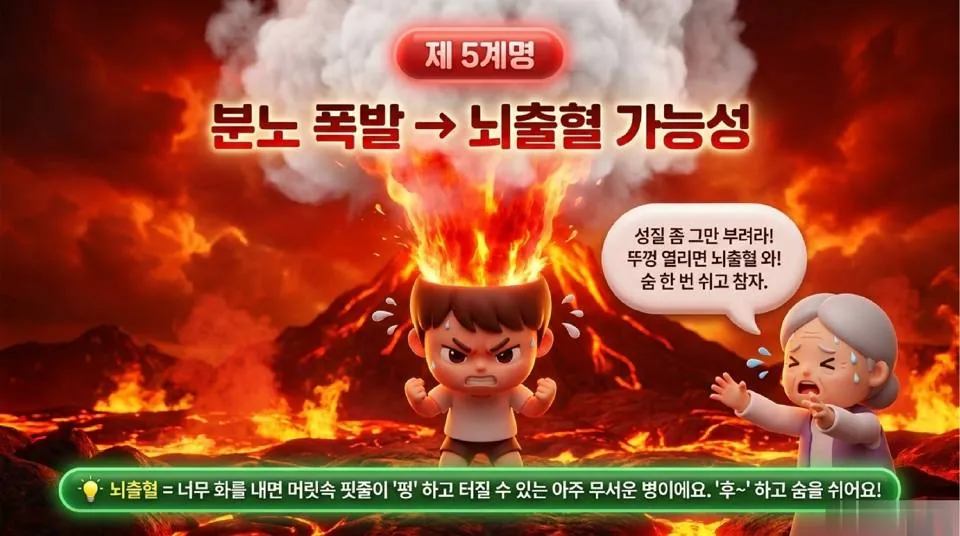
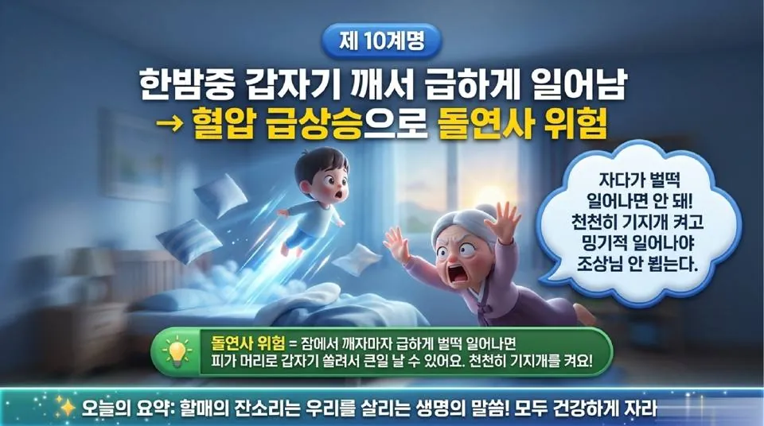

몸은 성령의 전, 할매의 잔소리를 말씀으로 다시 듣다
웃음으로 전해진 '할매 선지자'의 건강 10계명은 결국 "너희 몸은 너희 자신의 것이 아니라"는 말씀으로 이어진다. 물·아침·잠·절제·분노·서두름을 성경의 빛 아래 다시 읽는다.
요즘 웃음과 함께 돌고 있는 '할매 선지자의 경고'의 제목은 "지옥 가는(?) 치명적인 습관 10가지"다. 부제는 '건강복음 1장 1절', 설교 제목은 '건강 10계명', 설교자는 '의사 양반 & 할매 선지자'다. 물을 안 마시는 습관부터 한밤중에 벌떡 일어나는 습관까지, 할머니의 정겨운 잔소리로 엮은 열 가지 경고는 마지막 장에서 "할매의 잔소리는 우리를 살리는 생명의 말씀"이라고 맺는다. 웃고 넘기기엔 아까운 이 잔소리를, 이번에는 참된 생명의 말씀인 성경에 비추어 읽어 본다.
물음표 하나에 담긴 복음 — "지옥 가는(?)"
제목의 물음표가 이 자료의 재치다. 물을 덜 마셨다고 지옥에 가지는 않는다. 구원은 생활 습관의 성적표가 아니라 오직 은혜로, 오직 믿음으로 주어지는 하나님의 선물이다(엡 2:8-9). 그렇다고 몸을 아무렇게나 다뤄도 된다는 뜻은 아니다. 바울은 음란과 방종에 빠진 고린도 교회에 이렇게 묻는다.
너희 몸은 너희가 하나님께로부터 받은 바 너희 가운데 계신 성령의 전인 줄을 알지 못하느냐 너희는 너희 자신의 것이 아니라 값으로 산 것이 되었으니 그런즉 너희 몸으로 하나님께 영광을 돌리라 — 고린도전서 6:19-20
개혁신학은 이 말씀을 청지기 직분으로 읽어 왔다. 몸은 내 소유가 아니라 맡겨진 것이고, 맡기신 분께 결산해야 할 것이다. 웨스트민스터 대요리문답은 "살인하지 말라"는 제6계명을 풀면서, 이 계명이 남의 생명을 해치지 말라는 금지에 그치지 않고 자신과 이웃의 생명을 보존하려는 적극적 의무까지 요구한다고 가르친다. 그 의무 목록에 음식과 음료, 약, 수면, 노동, 오락을 절제 있게 사용하는 일이 들어 있다. 할매의 열 가지 잔소리가 거의 다 이 목록 안에 들어간다는 사실이 흥미롭다.
제1·2계명 — 물과 아침, 날마다 받는 은혜
할매는 "물 안 마시면 피가 탁해진다"며 컵을 내민다. 그런데 슬라이드 하단의 질문이 더 깊다. "나는 오늘 생명의 물을 충분히 마셨는가?" 몸이 물 없이 하루를 버티기 어렵듯 영혼도 생수 없이는 메마른다. 예수님은 사마리아 여인에게 "내가 주는 물을 마시는 자는 영원히 목마르지 아니하리니"(요 4:14)라고 하셨고, 초막절 끝날에는 "누구든지 목마르거든 내게로 와서 마시라"(요 7:37)고 외치셨다. 말씀 없는 하루는 물 없는 하루처럼 영혼의 피를 탁하게 만든다.
제2계명 "아침을 안 먹는다"에는 엘리야가 겹쳐 보인다. 갈멜산의 승리 직후 탈진해 로뎀나무 아래서 죽기를 구하던 선지자에게, 하나님은 책망보다 먼저 떡과 물을 주셨다. 천사는 그를 어루만지며 말했다. "일어나 먹으라 네가 갈 길을 다 가지 못할까 하노라"(왕상 19:7). 하나님은 지친 종에게 먼저 한 끼를 먹이시는 분이다. 광야의 만나도 아침마다 내렸다(출 16:21). "이것들이 아침마다 새로우니 주의 성실하심이 크시도소이다"(애 3:23). 아침을 거르는 습관은 몸의 에너지만 흔드는 것이 아니라, 하루를 은혜로 여는 리듬까지 흐트러뜨린다.

제3·6·8계명 — 잠은 하나님이 주시는 선물
할매는 잠에 대해서만 세 번 잔소리한다. 주말에 몰아서 자지 말고(제3계명), 배부르게 먹자마자 눕지 말고(제6계명), 스마트폰 붙들고 밤새우지 말라(제8계명). 성경은 잠을 게으름의 상징으로도(잠 6:9-11), 신뢰의 표지로도 그린다. 둘을 가르는 것은 리듬이다.
"여호와께서 그의 사랑하시는 자에게는 잠을 주시는도다"(시 127:2). 이 시편은 일찍 일어나고 늦게 누우며 수고의 떡을 먹는 것이 헛되다고 말한다. 밤을 새워 일해야 안심이 되는 사람, 잠들기 직전까지 화면을 붙드는 사람은 어쩌면 세상을 자기가 떠받치고 있다고 믿는 사람이다. 다윗은 쫓기는 밤에도 "내가 평안히 눕고 자기도 하리니 나를 안전히 살게 하시는 이는 오직 여호와이시니이다"(시 4:8)라고 고백했다. 잘 자는 것은 하나님께 세상을 맡겨 드리는 작은 믿음의 행위다.

주말 몰아 자기는 안식의 리듬을 떠올리게 한다. 하나님은 엿새와 하루라는 규칙적인 리듬을 주셨다(창 2:2-3, 출 20:8-11). 평일에 무리하고 주말에 쓰러지는 생활은 안식이 아니라 방전이다. 예수님도 지친 제자들에게 "너희는 따로 한적한 곳에 가서 잠깐 쉬어라"(막 6:31)고 하셨다. 쉼은 일하고 남는 시간이 아니라, 하나님이 처음부터 설계해 두신 질서다.
배부르고 바로 눕는 습관에는 잠언의 경고가 겹친다. "네가 만일 음식을 탐하는 자이거든 네 목에 칼을 둘 것이니라"(잠 23:2). 모세는 가나안 땅에서 배불리 먹은 뒤에 여호와를 잊지 말라고 거듭 당부했다(신 8:10-14). 배부름은 몸을 무겁게 하고, 영혼을 무디게 한다.
제4·7·9계명 — 절제, 성령의 열매
커피를 들이붓는 아이(제4계명), 뜨거운 탕에서 녹아내리는 아이(제7계명), 변기 위에서 무리하게 힘주는 아이(제9계명). 세 장면의 공통점은 '지나침'이다. 좋은 것도 넘치면 독이 된다. 바울은 "모든 것이 내게 가하나 다 유익한 것이 아니요 모든 것이 내게 가하나 내가 아무에게든지 얽매이지 아니하리라"(고전 6:12)고 했다. 커피 한 잔은 감사할 선물이지만, 커피 없이는 하루를 버틸 수 없다면 그것은 이미 나를 얽맨 것이다.

절제는 갈라디아서가 꼽는 성령의 열매 목록의 마지막 자리에 있다(갈 5:23). "이기기를 다투는 자마다 모든 일에 절제하나니"(고전 9:25). 절제는 즐거움을 빼앗는 금욕이 아니라, 선물을 선물답게 누리게 하는 자유다.
제9계명에서 할매가 내미는 처방이 고구마 바구니라는 점도 재미있다. 바벨론 왕궁에서 왕의 진미를 거절한 다니엘과 세 친구는 "우리에게 채식을 주어 먹게 하고 물을 주어 마시게 한 후에"(단 1:12) 비교해 보라고 청했고, 열흘 뒤 그들의 얼굴은 더 아름답고 윤택했다(단 1:15). 신앙의 지조가 소박한 식탁에서 드러난 것이다. 억지로 힘주는 대신 평소의 식탁을 바꾸라는 할매의 지혜는, 무리한 열심보다 꾸준한 습관을 귀히 여기는 말씀의 지혜와 맞닿아 있다.
제5계명 — 분노는 머리와 영혼을 함께 태운다
화산처럼 정수리가 터지는 아이 앞에서 할매는 "숨 한 번 쉬고 참자"고 말린다. 성경은 분노 자체를 무조건 정죄하지 않는다. "분을 내어도 죄를 짓지 말며 해가 지도록 분을 품지 말고 마귀에게 틈을 주지 말라"(엡 4:26-27). 문제는 터뜨리는 것과 묵히는 것이다. 야고보는 "듣기는 속히 하고 말하기는 더디 하며 성내기도 더디 하라 사람이 성내는 것이 하나님의 의를 이루지 못함이라"(약 1:19-20)고 했다.

잠언은 마음과 몸이 하나로 묶여 있음을 일찍이 알았다. "평온한 마음은 육신의 생명이나 시기는 뼈를 썩게 하느니라"(잠 14:30). "마음의 즐거움은 양약이라도 심령의 근심은 뼈를 마르게 하느니라"(잠 17:22). 대요리문답이 제6계명이 금하는 죄로 죄악된 분노를 분명히 꼽는 것도 같은 맥락이다. 분노를 다스리는 일은 성품 수양을 넘어, 생명을 지키라는 계명의 문제다.
노하기를 더디 하는 자는 용사보다 낫고 자기의 마음을 다스리는 자는 성을 빼앗는 자보다 나으니라 — 잠언 16:32
제10계명 — 믿는 이는 다급하게 되지 않는다
마지막 계명은 한밤중에 깨서 급하게 일어나는 습관이다. 할매는 "천천히 기지개 켜고 밍기적 일어나라"고 한다. 의학의 언어로는 혈압의 문제지만, 신앙의 언어로는 서두름의 문제다. 이사야는 시온에 두신 견고한 기촛돌을 말하며 "믿는 이는 다급하게 되지 아니하리로다"(사 28:16)라고 선언했다. 또 "너희가 돌이켜 조용히 있어야 구원을 얻을 것이요 잠잠하고 신뢰하여야 힘을 얻을 것이거늘"(사 30:15)이라고 했다.

눈을 뜨자마자 휴대전화부터 집어 들고, 걱정부터 붙잡으며 하루를 '벌떡' 시작하는 이들이 많다. 다윗은 달랐다. "내가 누워 자고 깨었으니 여호와께서 나를 붙드심이로다"(시 3:5). 아침의 첫 동작이 서두름이 아니라 감사일 때, 몸도 영혼도 상하지 않는다.
한눈에 보는 건강 10계명과 말씀
| 계명 | 할매의 경고 | 함께 읽을 말씀 |
|---|---|---|
| 제1 | 물을 안 마신다 | 요 4:14, 7:37 |
| 제2 | 아침을 안 먹는다 | 왕상 19:7, 애 3:23 |
| 제3 | 주말에 너무 잔다 | 창 2:2-3, 막 6:31 |
| 제4 | 카페인 과다 섭취 | 고전 6:12 |
| 제5 | 분노 폭발 | 엡 4:26, 약 1:19-20 |
| 제6 | 배부르고 바로 잠 | 잠 23:2, 신 8:10-14 |
| 제7 | 뜨거운 물에 오래 들어가기 | 고전 9:25, 갈 5:23 |
| 제8 | 수면 부족 | 시 127:2, 4:8 |
| 제9 | 화장실에서 무리 | 단 1:12 |
| 제10 | 한밤중 급하게 일어남 | 사 28:16, 시 3:5 |
잔소리는 사랑이고, 말씀은 생명이다
이 자료의 마지막 장은 "할매의 잔소리는 우리를 살리는 생명의 말씀"이라고 맺는다. 어린 시절 할머니의 잔소리가 귀찮았던 사람도 세월이 지나면 그것이 사랑이었음을 안다. 관심이 없으면 잔소리도 없다. 다만 여기서 한 걸음 더 나아가야 한다. 할매의 잔소리는 몸을 살리지만, 몸과 영혼을 함께 영원히 살리는 말씀은 오직 성경이다. 건강 수칙은 하나님이 모든 사람에게 베푸시는 일반은총의 지혜이고, 그 지혜를 주신 분을 아는 것이 영생이다(요 17:3).
바울은 "육체의 연단은 약간의 유익이 있으나 경건은 범사에 유익하니 금생과 내생에 약속이 있느니라"(딤전 4:8)고 했다. '약간의 유익'은 '무익'이 아니다. 몸을 돌보는 일이 경건을 대신할 수는 없지만, 경건한 삶을 섬기는 도구는 된다. 사도 요한의 축복처럼 "네 영혼이 잘됨 같이 네가 범사에 잘되고 강건하기를"(요삼 1:2) 바라는 것이 성도의 건강관이다.
그러니 오늘 물 한 잔을 마시며 생수 되신 주님을 생각하고, 아침 한 끼 앞에서 일용할 양식을 감사하고, 제때 잠자리에 들며 세상을 하나님께 맡기자. "너희가 먹든지 마시든지 무엇을 하든지 다 하나님의 영광을 위하여 하라"(고전 10:31). 건강 10계명은 결국 이 한 절에 대한 생활 주석이다. 우리 몸으로 드리는 산 제물(롬 12:1)은 거창한 헌신에서만이 아니라, 오늘 밤 제때 눕고 내일 아침 천천히 일어나는 일상에서부터 시작된다.